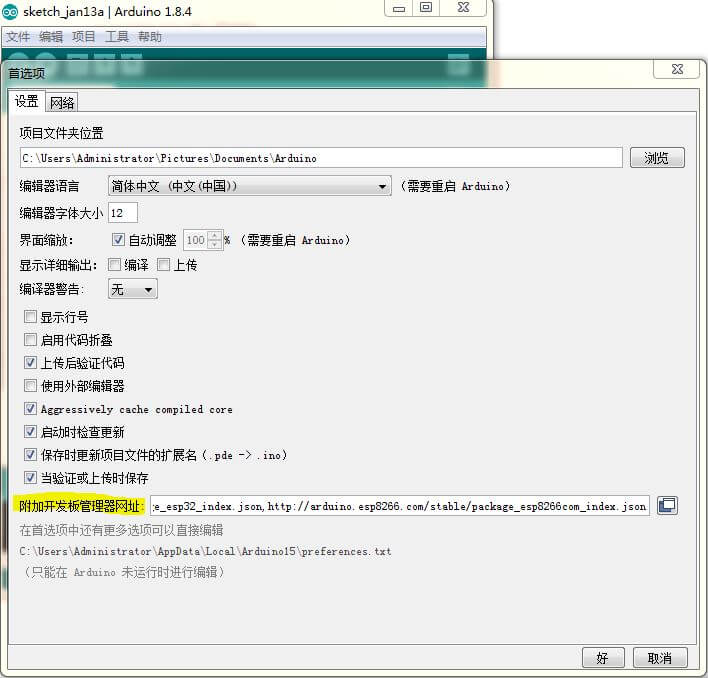
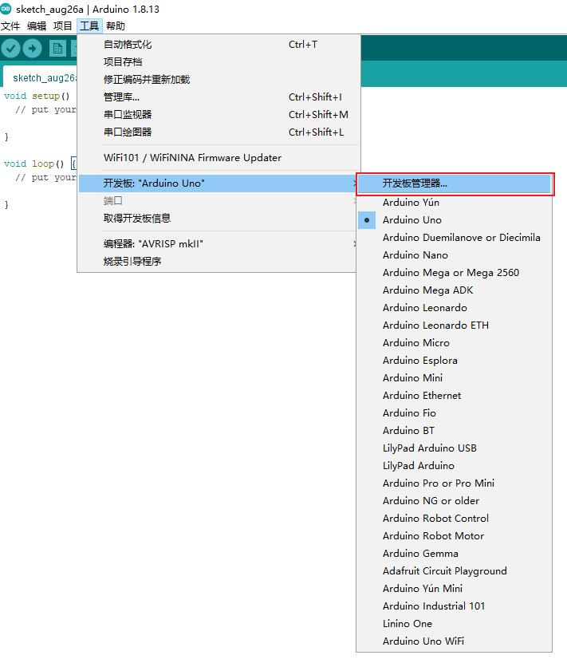
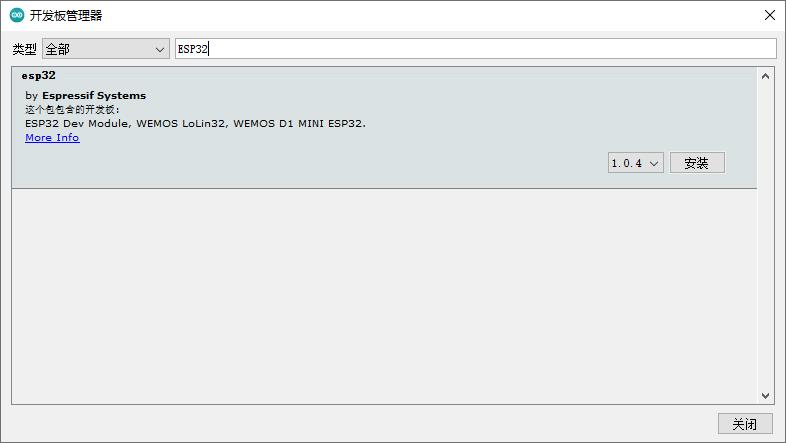
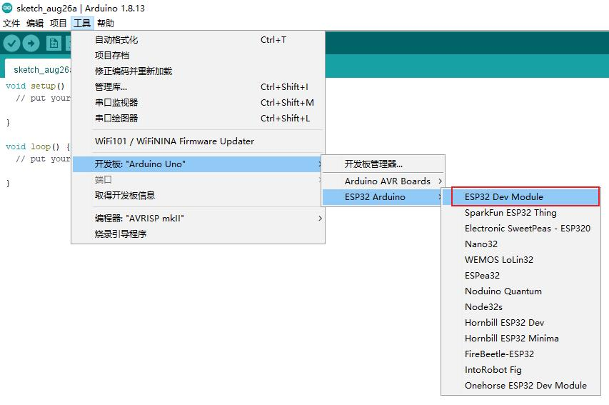
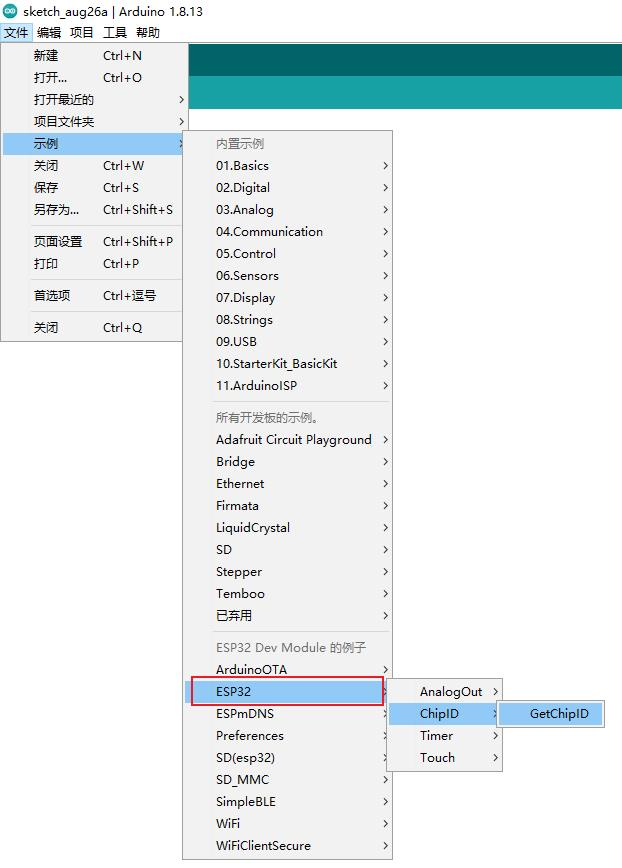
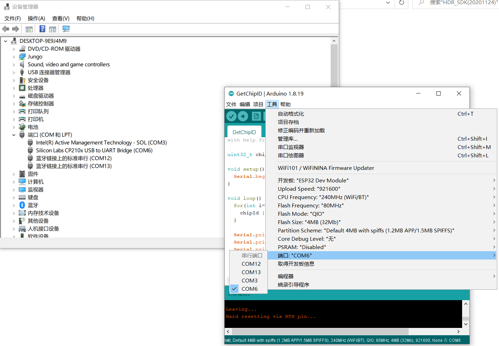
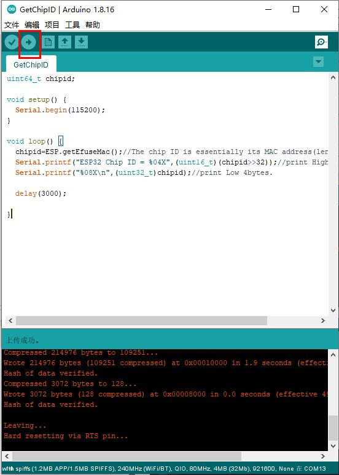
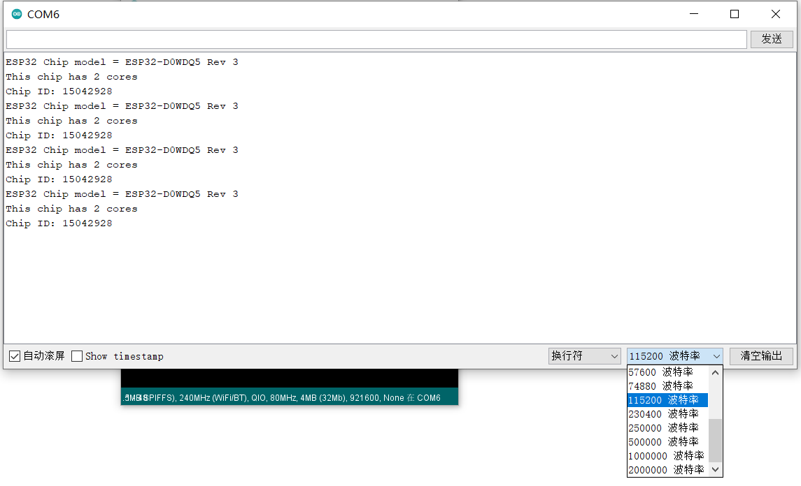

上手开局指南
安装 Arduino IDE
Arduino IDE 集成了编辑器、工具链管理、库管理、开发板管理和串口调试助手，适合于初学者。由于缺少代码补全和智能感知功能，我们推荐使用 VSCode + PlatformIO 作为进阶使用。

Arduino IDE 是跨平台软件，支持 Windows、MacOS 和 Linux。
Windows
下载 Arduino IDE 的安装包后，按照安装指引即可完成安装。
MacOS
下载的压缩包解压得到 Arduino 应用，将其移动到 应用程序 目录下即可。
其他系统 or 最新版本
请前往 官网 自行下载。
截止 2022 年 4 月 7 日，Arduino IDE 最新的稳定版本为 1.8.19
添加 ESP32 开发板
Arduino IDE 默认不包含 ESP32 单片机，我们需要给它添加。
-
在菜单栏依次选择
文件-首选项，打开首选项配置界面：
在附加开发板管理器网址内填写
http://10.134.118.207:8008/esp32.json，然后点击好。此链接为校内镜像
网络上其他的教程一般会要求在此输入乐鑫官网的下载地址
https://dl.espressif.com/dl/package_esp32_index.json，但它要求从 Github 下载文件，在国内有连接不稳定的问题。因此我们搭建了校内镜像以减少大家的麻烦，同时也需要注意：镜像链接在校外是无法工作的。 -
在菜单栏依次选择
工具-开发板-开发板管理器，搜索ESP32可以看到一个条目，点击安装：

-
在菜单栏依次选择
工具-开发板，选择ESP32 Arduino-ESP32 Dev Module为开发板：
编译并上传 GetChipID 示例程序
为了测试我们的环境是否已经配置正确，我们可以使用 Arduino IDE 自带的示例程序来快速验证。
-
打开示例程序：在菜单栏依次选择
示例-ESP32-ChipID-GetChipID：
-
使用 USB 线缆将开发板联机：

-
设置上传端口号：
通过 USB 线与电脑相连后，系统会给核心板分配一个端口号。在 Windows 上，可以通过设备管理器（在 Win10 下右键开始菜单图标可以看到）查看这个端口号，比如
(COM6；在 Linux 或 MacOS 上，可以通过ls /dev/tty命令，来查看所有的串口，并从中选择形如tty.usbserial的串口。
串口名称
核心板板载
CP2102USB 转串口芯片，因此载设备管理器中的名字为CP210x USB to UART。如果没有发现这个设备：- 请检查线缆是否连接正确，重新插拔一次；
- 核心板上是否有 LED 点亮，如不亮说明没有供电或板子坏；
- 没有安装 CP2102 驱动，设备管理器中显示 黄色 感叹号，请 点击此处下载 并安装。
-
点击上传按钮：

Arduino IDE 会自动编译程序并上传到选定端口的 ESP32 上，核心板内置自动复位电路，但由于我们的失误，在一部分电脑上无法自动上传，如果出现一长串的
____.....____还没有出现下载进度，请 按住 IO0 直到出现下载进度，从而手动上传。快速操作的办法
当 Arduino IDE 下方深色背景的窗口中刚显示
Connecting....时，就 按下 IO0 按键 ，这样就能最快地出现上传进度。我们注意到，在程序中有一行：
Serial.begin(115200);其含义是使串口初始化，波特率设置为 115200。
-
打开串口监视器查看结果：
上传完毕后，在 Arduino IDE 的右上角，有一个放大镜图标的按钮，即“串口监视器”，能显示核心板通过串口发送的数据，也能向它发送数据。
在窗口的右下角，必须设置准确的波特率才能显示正确的信息，否则数据会显示为乱码。调整的方法和调整完毕后预期的结果如下图所示：

如果打开串口无任何显示，请按下核心板上的复位键，即 EN 按键。
为什么不建议使用
9600既然硬件波特率和监视器波特率都可以设置，将波特率设置为
9600可以省一步手动设置，这也是 AVR 版本 Arduino 的管理。但使用115200有非常多 难以拒绝 的好处： 1. 10 倍的传输速度提升，提高代码运行速度； 2. ESP32 打印系统错误信息时，使用固定波特率115200，（其实 ESP32 的 Arduino 背后，是一个 FreeRTOS 的实时操作系统，详见 ESP-IDF ）。可以看到这个示例程序的功能即通过串口打印 ESP32 的芯片唯一 ID，到此开局成功！